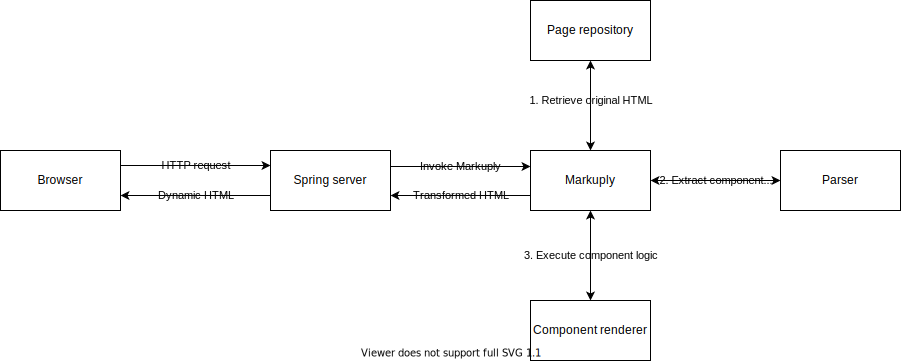

What’s Markuply?
Markuply is a Spring Boot library used to fill static HTML templates with dynamic data from external data sources.

Features:
-
Fully reactive
-
Nested components
-
Propagating headers both ways
-
Templating engine independent
When combined with Graal templating:
-
Javascript Server Side Rendering support on GraalVM
-
Rapid development with webpack dev server